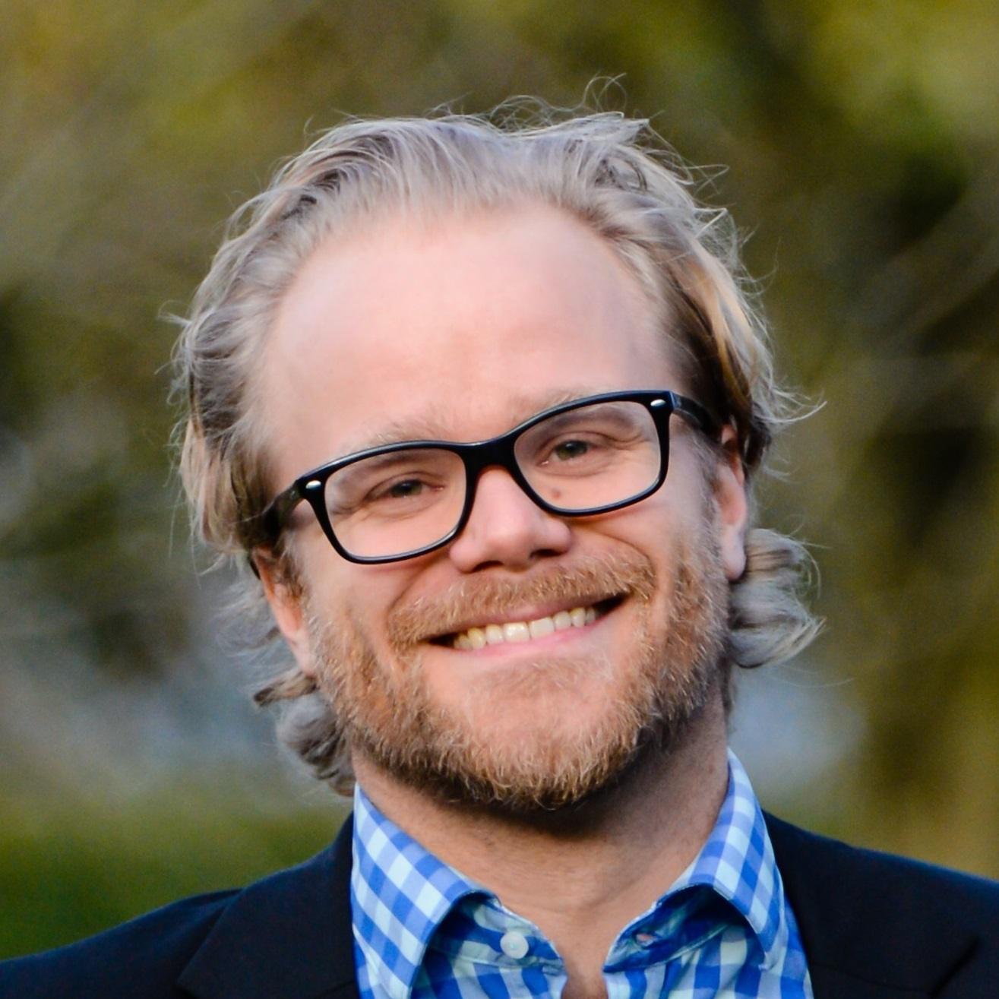
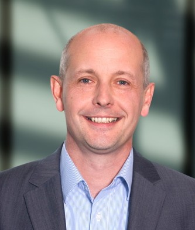
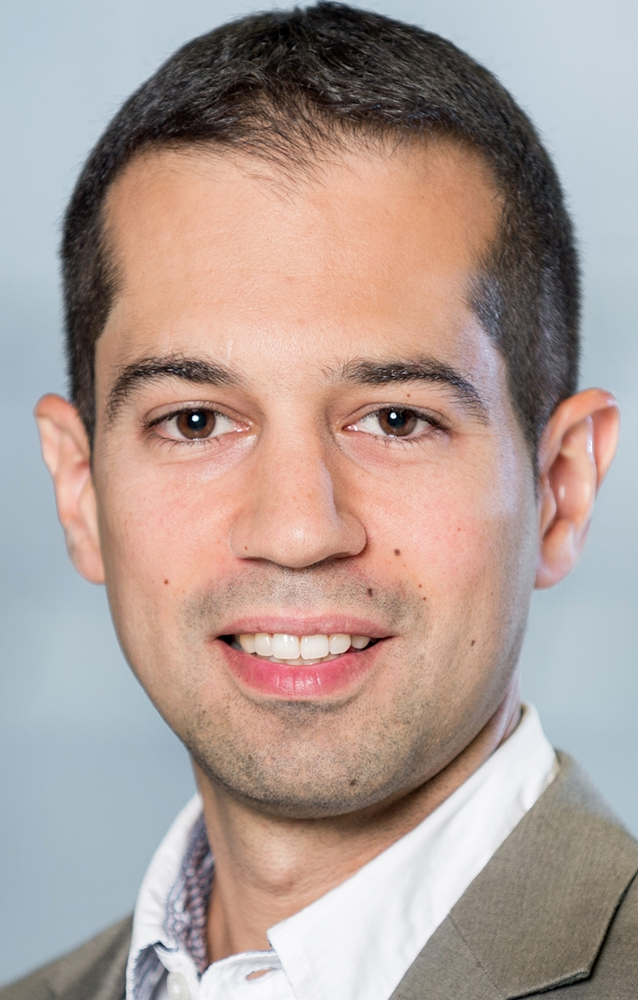
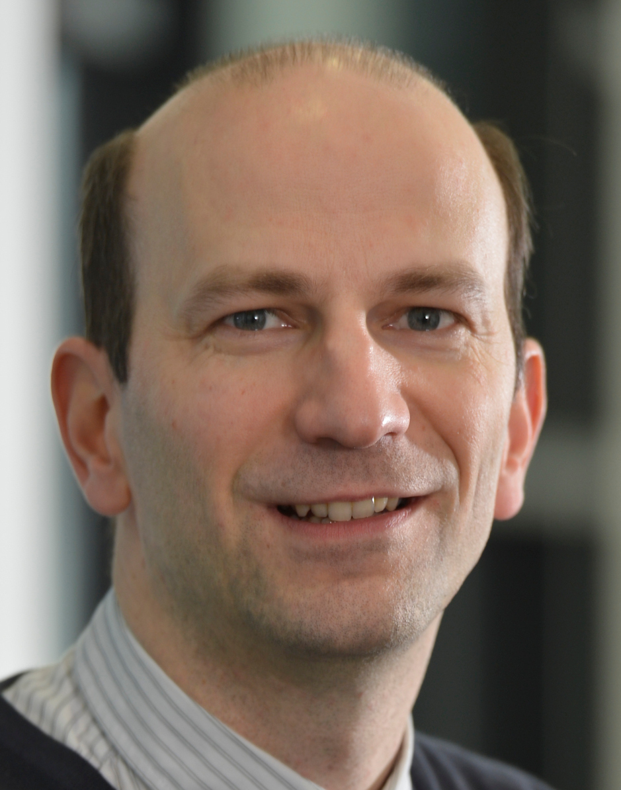
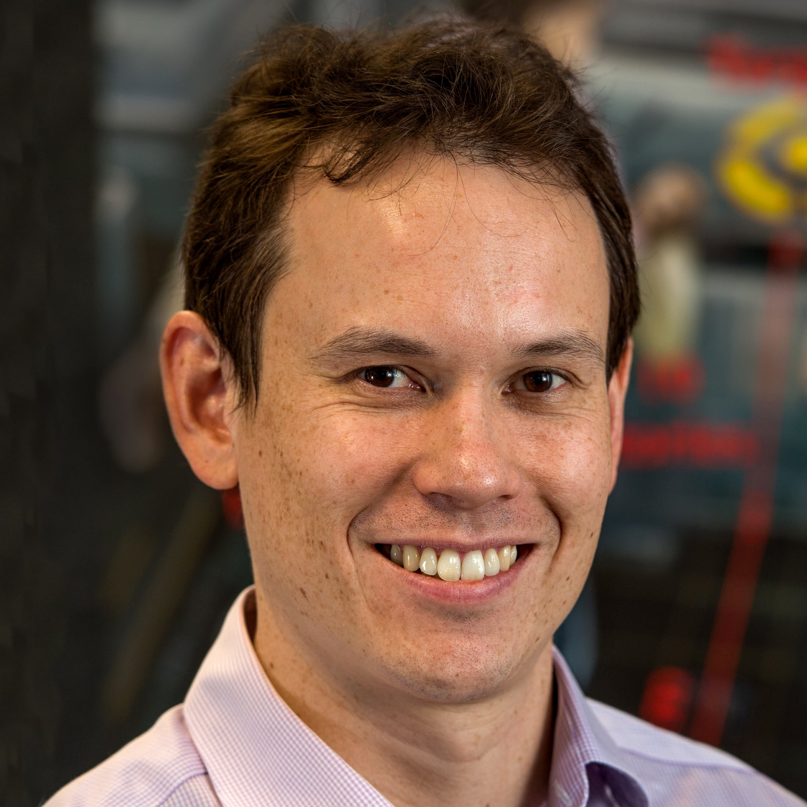
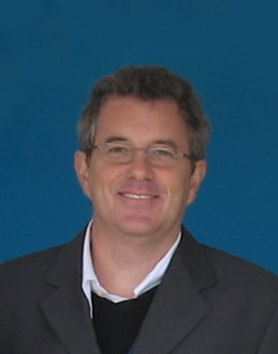
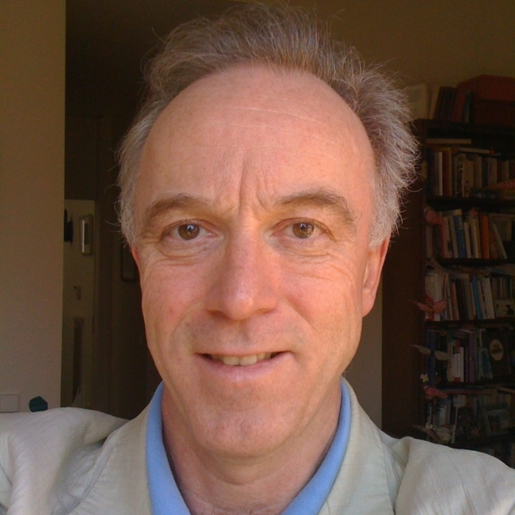

- Cognitive Vehicles Workshop // IROS 2019
- Home
- News
- Program
- Speakers
- Call for papers
- Organizers

Invited Speakers
| Speaker | Biography | Title/abstract |
|---|---|---|
| Applications | ||
|  | Gustav Markkula is an Associate Professor at the Institute for Transport Studies, University of Leeds, United Kingdom. He is an engineer by training, and applies quantitative methods and models to the study of human behaviour and cognition in road traffic. He has spent more than a decade in the automotive industry (Volvo), as a systems engineer, project manager, and technical specialist, working on numerous research & development projects relating to driving safety, driver distraction, human-machine interfaces, and driver behaviour in general. During this time he also pursued a PhD (Chalmers University of Technology, Gothenburg, Sweden), on the topic of mathematical modelling of driver behaviour, to support virtual testing of automotive safety systems. In 2015 he joined the University of Leeds to further expand this research. He currently holds a UK EPSRC Early Career Fellowship of which the objective is to develop neurobiologically plausible models of road user interactions, to support development and testing of automated vehicles. | Why a neurocognitive understanding of human road users is needed to ensure safety and acceptance of automated vehicles |
| Tarin's experience cuts across a multitude of fields, from perception algorithms for autonomous systems, (perception's early lead at Apple SPG, and CTO of VoyageAuto), to decoding neural signals in live brains for the NIH to better understand biological vision. Tarin has also designed underwater SONAR/vision fusion algorithms for the US Navy, (Progeny Corp), as well a ground-penetrating-RADAR perception algorithms for the US Army (ASI). Currently, Tarin is Director R&D at CTRL-Labs, where he leads a team developing novel spike-decoding techniques and algorithms. He brings a total of 15 years industrial experience to the fore. Tarin received his BSEE from George Mason University (2004), MSEE from George Washington University (2007), and completed some post-graduate work in Computational Neuroscience at Krasnow Institute of Neuroscience at GMU. | Today, the autonomous driving space is extremely cluttered. This is even more true however, for the space of algorithms and architectures that are supposed to power them. Many companies, research groups, and startups are seemingly focused on how to design self-driving cars. However, almostno one is talking about how not to design them. Entrenched opinions, (and on the other side, ill-thought out opinions), technical clutter, and fear of the "other's" competition, all contribute to a rushed and non-empirical environment where proper and safe algorithm design cannot occur. Further compounding this problem however, is the lack of technical discipline and know-how on when not to use certain algorithms and architectures. What are those architectures and algorithms, and how can we counteract the entrenched orthodoxy in autonomous vehicles? This talk explores that. | |
|  | Michael Würtenberger is the vice president of E/E Architectures, Technologies and AI at BMW Group. Prior to that, he was vice president E/E system design and integration, driving dynamics. From 2013 to 2017, he was the managing director of BMW Car IT in Ulm. He received the diploma in electrical engineering and a PhD in automation engineering from Technical University of Darmstadt. | |
| Perception | ||
|  | Davide Scaramuzza is professor of robotics and perception at both departments of Neuroinformatics (University of Zurich & ETH Zurich) and Informatics (University of Zurich), where he does research at the intersection of robotics and computer vision. He did his PhD in robotics and computer vision at ETH Zurich (with Roland Siegwart) and a postdoc at the University of Pennsylvania (with Vijay Kumar and Kostas Daniilidis). From 2009 to 2012, he led the European project sFly, which introduced the PX4 autopilot and pioneered visual-SLAM–based autonomous navigation of micro drones. From 2015 to 2018 he was part of the DARPA FLA program. For his research contributions, he was awarded the prestigious IEEE Robotics and Automation Society Early Career Award, the Misha Mahowald Neuromorphic Engineering Award, the SNSF-ERC Starting Grant (equivalent to NSF Career Award), Google, Intel, Qualcomm, and KUKA awards, as well as several conference and journal paper awards (e.g., IEEE Trans. of Robotics Best Paper Award 2017). He coauthored the book “Introduction to Autonomous Mobile Robots” (published by MIT Press) and more than 100 papers on robotics and computer vision. In 2015, he cofounded a venture, called Zurich-Eye, dedicated to visual-inertial navigation solutions for mobile robots, which today is Facebook-Oculus Zurich. He was also the strategic advisor of Dacuda, an ETH spinoff dedicated to inside-out VR solutions, which today is Magic Leap Zurich. Many aspects of his research have been prominently featured in the popular press, such as The New York Times, Discovery Channel, BBC, IEEE Spectrum, MIT Technology Review. | Event cameras are bionspired sensors with microsecond latency, much larger dynamic range and one thousand times lower power consumption than standard cameras. I will give a short tutorial on event cameras and show their applications trains, drones, and cars. |
| Justus Piater is a professor of computer science at the University of Innsbruck, Austria, where he leads the Intelligent and Interactive Systems group. He holds a M.Sc. degree from the University of Magdeburg, Germany, and M.Sc. and Ph.D. degrees from the University of Massachusetts Amherst, USA, all in computer science. Before joining the University of Innsbruck in 2010, he was a visiting researcher at the Max Planck Institute for Biological Cybernetics in Tübingen, Germany, a professor of computer science at the University of Liège, Belgium, and a Marie-Curie research fellow at GRAVIR-IMAG, INRIA Rhône-Alpes, France. His research interests focus on visual perception, learning and inference in sensorimotor systems. He has published more than 180 papers in international journals and conferences, several of which have received best-paper awards. Currently he serves as the founding director of the interdisciplinary Digital Science Center of the University of Innsbruck. | Driving is such a complex behavior that the behavior of an autonomous vehicle is hard for humans to reason about. This is true for engineered systems, but even more so for machine learning systems. As human drivers cede - or should we say: lose? - control to automation, it becomes increasingly important for humans to trust the autonomous system. How can we establish such trust? What are necessary or sufficient conditions for such trust? What is the role of AI transparency; to what extent is it desirable or helpful for humans to understand how the AI system arrives at its decisions? Should the human be able to talk back to the AI system? What can we learn from biological systems in this regard? I will discuss some technical avenues, but on the whole I will raise more questions than I can give answers. | |
|  | Robert Haschke received the diploma and PhD in Computer Science from the University of Bielefeld, Germany, in 1999 and 2004, working on the theoretical analysis of oscillating recurrent neural networks. Since then, his work focuses more on robotics, still employing neural methods whereever possible. Robert is currently heading the Robotics Group within the Neuroinformatics Group, striving to enrich the dexterous manipulation skills of our two bimanual robot setups through interactive learning. His fields of research include neural networks, cognitive bimanual robotics, grasping and manipulation with multi-fingered dexterous hands, tactile sensing, and software integration. | The sense of touch is a major prerequisite for successful grasping and manipulation with our hands: We sense the first contact to an object, how much pressure we apply, whether an objects slips, how hard it is and so on. This talk will discuss what we can learn from human tactile perception for the design of tactile sensors and appropriate sensing algorithms. We will cover typical tactile applications, from touch detection, over slip detection, and material classification. Finally, I will give an outlook, how tactile sensors could be used in a car to sense the driver's state. |
| Learning | ||
|  | Professor Milford conducts interdisciplinary research at the boundary between robotics, neuroscience and computer vision and is a multi-award winning educational entrepreneur. His research models the neural mechanisms in the brain underlying tasks like navigation and perception to develop new technologies in challenging application domains such as all-weather, anytime positioning for autonomous vehicles. He is also one of Australia’s most in demand experts in technologies including self-driving cars, robotics and artificial intelligence, and is a passionate science communicator. He currently holds the position of Professor at the Queensland University of Technology, as well as Australian Research Council Future Fellow, Microsoft Research Faculty Fellow and Chief Investigator at the Australian Centre for Robotic Vision. | The natural kingdom has long served as an inspiration for roboticists working on both the hardware and software components of autonomous systems. In this talk I will provide a perspective on why we do this, the many dogmas in the field, and what from biological inspiration typically actually makes it onto a deployed system in the real world and why. |
|  | Mauro Da Lio received the Laurea degree in mechanical engineering from the University of Padova, Italy, in 1986. He is Full professor of mechanical systems with the University of Trento, Italy. His earlier research activity was on modelling, simulation and optimal control of mechanical multibody systems, in particular vehicle and spacecraft dynamics. More recently his focus shifted to the modelling of human sensory-motor control, in particular drivers and motor impaired people. Prior to his academic career, he worked for an offshore oil research company in underwater robotics (a EUREKA project). He was involved in several EU framework programme 6 and 7 projects (PReVENT, SAFERIDER, interactIVe, VERITAS, AdaptIVe, and No-Tremor). He is currently the coordinator of the EU Horizon 2020 Dreams4Cars Research and Innovation Action: a collaborative project in the Robotics domain which aims at increasing the cognition abilities of artificial driving agents by means of offline simulation mechanisms broadly inspired to the human dream state. | This talk describes the position of the H2020 Dreams4Cars research project (a Research and Innovation Action funded under the EU Robotics banner) that deals with the architecture, and the abilities, of agents that should be capable of autonomously learning reliable driving and natural human-robot interactions. Hence, the goals of D4C are developing cognition abilities for 1) automatic discovery of significant situations and 2) automatic learning from those situations. I will start from an introductory survey of theories for artificial cognition in embodied robots. The traditional sense-think-act paradigm will be recalled and critically reviewed, focusing on the issues that limit this design approach. Some considerations regarding recent examples of Deep Neural Network implementations (end-to-end trained networks) will also be given. Then, I will introduce and motivate a biologically inspired layered control architecture that consists of a network-of-networks. I will show how this agent architecture can be created with use (and re-use) of simple artificial neural networks building components that can be tested in isolation and hence the aggregated behaviour can be certified. I will show examples of emerging safe behaviours that are difficult to obtain with the sense-think-act approach. I will then focus on the lower levels of sensorimotor control, taking inspiration from how the human brain efficiently solves the problem of learning the forward and inverse dynamics of its body and of the manipulated objects and how these learned models are used for a variety of in-line and offline purposes. I will provide examples of application of these principles to the engineering of artificial agents; in particular examples of vehicle dynamics models learned with artificial neural networks (contrasted to parametric analytical models) and their use for sensory anticipation, state estimate and motor control. I will then talk about sensorimotor imagery. Predictions in the brain and neural network architectures for similar efficient prediction in artificial agents. Episodic simulations and embodied simulation. Inline use of sensory anticipation. Forward/inverse model adaptation. Learning efficient motor control at chassis and tactical level. Offline use of sensorimotor imagery. Creating episodes and learning from episodes. Finally, I will talk about the use of the same agent architecture for creating emergent human-robot interactions (in the “like-me” fashion). I will recall the mirror neuron theory and how mirroring emerges from the agent as just another type of action-selection process. How an agent with mirroring can understand and predict human intentions and how it can collaborate with humans. |
| Cognitive Architectures | ||
| Yulia Sandamirskaya is a Group Leader in the Institute of Neuroinformatics (INI) at the University of Zurich and ETH Zurich. Her group “Neuromorphic Cognitive Robots” develops neuro-dynamic architectures for embodied cognitive agents. In particular, she studies memory formation, motor control, and autonomous learning in spiking and continuous neural networks, realised in neuromorphic hardware interfaced to robotic sensors and motors. She has a degree in Physics from the Belorussian State University in Minsk, Belarus and Dr. rer. nat. from the Institute for Neural Computation in Bochum, Germany. She is the chair of EUCOG — the European Society for Cognitive Systems and the coordinator of the NEUROTECH project that supports and develops the neuromorphic computing community in Europe. | Neuromorphic hardware emulates dynamics of biological neurons and synapses using conventional electronic circuits and novel materials. Neuromorphic chips use spikes to communicate neuronal activation values, support recurrent connectivity, and often realise local learning (plasticity) rules. These networks enable more efficient, event based computation (spikes), memory (recurrence), and online learning (plasticity). However, such networks are harder to train and use than conventional feedforward artificial neuronal networks. In this talk I will show how principles, derived from neuronal models of cognition, allow us to realise cognitive architectures in neuromorphic hardware that can control behaviour of robotic agents — both vehicles and interactive agents. | |
|  | Gregor Schöner is the director of the Institute of Neural Computation at the Ruhr-University Bochum, where he holds the Chair for Theory of Cognitive Systems. His research agenda is aimed to understand how embodied and situated nervous systems develop cognition. To that end, he has developed, with his colleagues, the theoretical framework of Dynamical Field Theory. Its concepts are validated through a variety of close theory-experiment collaborations in domains as varied as multi-degree of freedom movements, object-oriented reaching, perception of motion, scene perception, working memory for action, space and visual features, sequence generation, grounded relational cognition, mental mapping, and the development of early cognition and motor behavior. Synthesis is achieved by building neural cognitive architectures that integrate perception, embodied cognition, and action, and are demonstrated on robotic platforms as embodied cognitive agents. | With the explosion in performance of deep neural networks that arose as networks and learning data were scaled, neurally inspired methods have returned center-stage to efforts to create autonomous cognitive agents, with autonomous driving as the most visible and viable application area. Many key components of cognitive agents remain removed from neural analogy, however. This includes the algorithms that “read” the outputs of the intelligent filters that neural networks provide. It also includes algorithms that plan and organize behavior, and that manage data storage for probabilistic methods central to current solutions for situation modeling. I will outline what is entailed in creating pervasively neural cognitive architectures and illustrate the neural dynamic principles invoked in a few simple demonstrations. The long-term benefit of pervasively neural accounts of cognition could lie in their capacity to autonomously learn from experience, their capacity to autonomously acquire background knowledge, and their capacity to interact with human users at an appropriately high level. Considerable gaps in our understanding of the neural process basis of human cognition are formidable obstacles on such a path, however. |